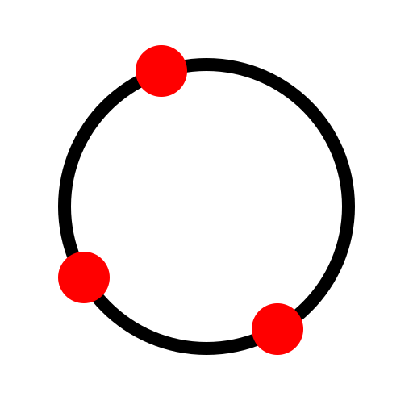
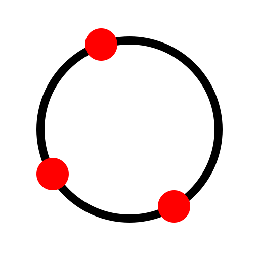
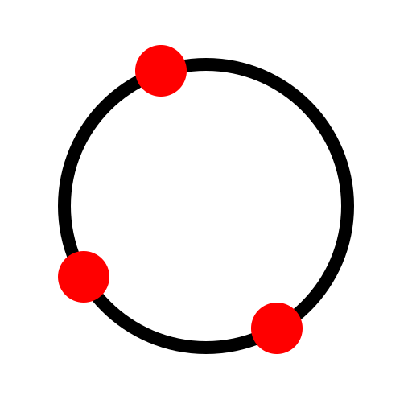

Menu: Disegna - Cerchio - 3 Punti
Scorciatoia: C, 3
Comandi: Circle3P | c3

Descrizione:
Se conoscete tre punti qualunque di una circonferenza, potete utilizzare questo strumento per costruire una circonferenza completa.
Procedura: